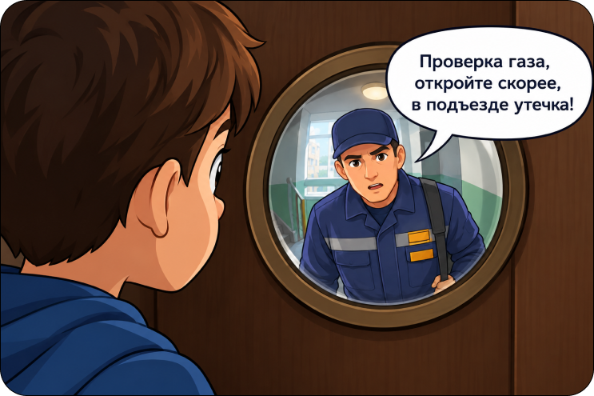

Сюжет первый Суббота, родители ушли в магазин. Вдруг раздается звонок в дверь. Ты смотришь в глазок — там незнакомый мужчина в спецовке. Он говорит: «Проверка газа, откройте скорее, в подъезде утечка!». Твои действия?
Сразу открыть дверь — это же газ, дело опасное!
Не открывать дверь. Ответить через дверь, что родителей нет, и сразу позвонить им или в 112.
Сказать: «Идите отсюда, я вам не верю!», включить музыку погромче и игнорировать.
❌ Опасно! Грубить не стоит, но главное — нужно обязательно сообщить родителям, чтобы они проверили, действительно ли была проверка.